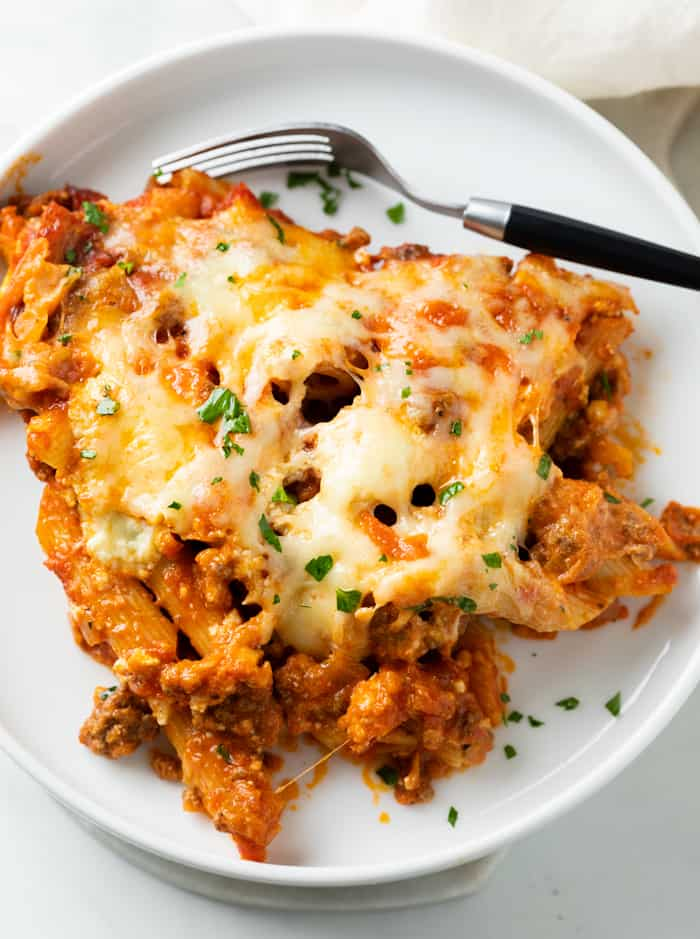

Amazing Baked Pasta

Description
Nothing beats a chessy, meaty pasta because It is easy and fast dish to make. It is also very tasty and satisfying, so people will not leave the table with empty stomach.
Ingredients
- 1lb. Pasta (In my opinion ziti is the best option)
- 1 cup of Ricotta cheese
- ¼ cup of Parmesan cheese, finely grated
- 1 egg, whisked
- 2 ½ cups of mozarrela cheese, seperated
- 1 lb. ground beef
- 1 small yellow onion diced
- 3 cloves garlic minced
- 1/8 teaspoon red pepper flakes
- ½ teaspoon EACH: Salt/Pepper
- 1 teaspoon EACH: Onion powder + Italian Seasoning
- 2 700ml jars of marinara sauce
- Fresh Parsley,to garnish
Steps how to make Amazing Baked Pasta
- Preheat oven to 190 degrees Celsius.
- Cook pasta for 2 minutes less than al dente.
- Combine the Ricotta, Parmesan, 1 whisked egg, and 1 cup of mozzarella cheese and set aside.
- Cook ground beef and onions in a large skillet. Drain grease and add seasonings.
- Add marinara sauce and heat through.Combine pasta with 3/4 meat sauce. and and too a 9x13 inch casserole dish
- Top with dollops of ricotta mixture and remaining meat sauce.
- Cover and bake at 190 degrees Celsius for 20 minutes.
- After 20 minutes, remove cover and increase to 200 degrees Celcius Top with mozzarella cheese and bake uncovered for 10-15 minutes, until hot and bubbly.
- Garnish with fresh parsley and serve with garlic bread with cheese if you have one.